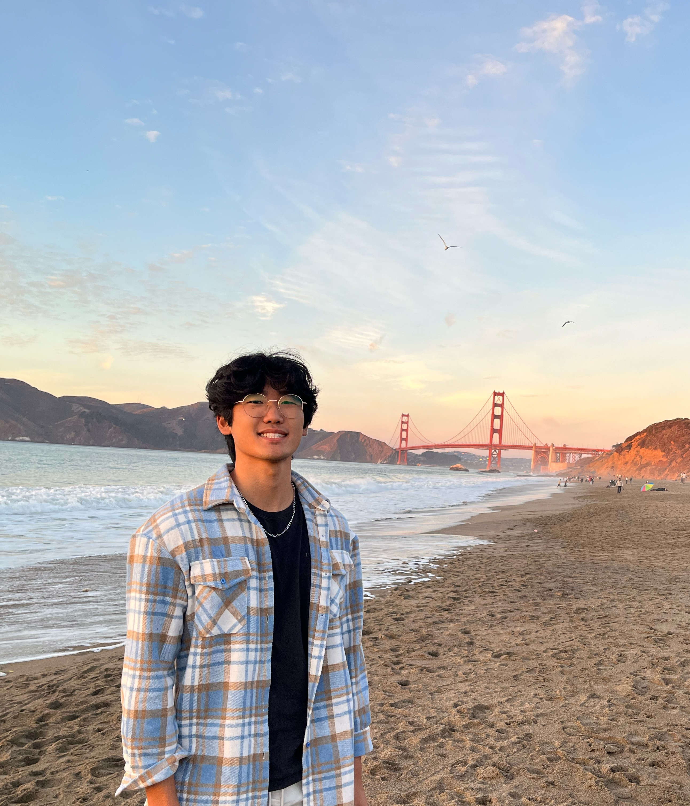

Student, Leader, and Aspiring Engineer
About Me

Hey! I'm Tyler Jung, a Physics, Data Science, and EECS student at UC Berkeley from New York.
Some of my professional interests include electrical hardware, quantum computing, data engineering, and cosmology.
In my free time, I enjoy playing the violin, skiing, making sushi, and watching sports!